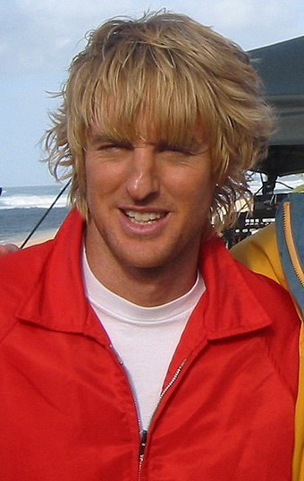
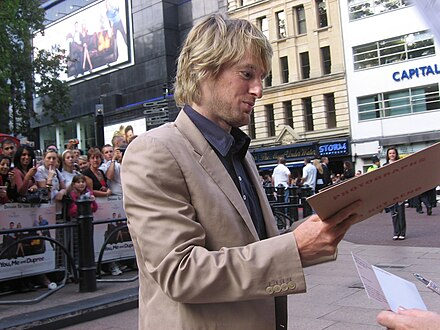
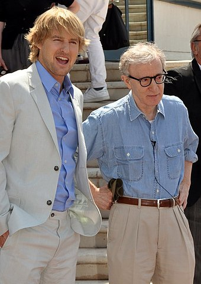

Early life
Wilson was born in Dallas, the middle child of three sons of photographer Laura Cunningham Wilson (b. 1939) and Robert Andrew Wilson (1941–2017), an advertising executive and operator of a public television station. His brothers Andrew and Luke are also actors. Wilson's parents are of Irish descent. As a teenager, Wilson broke his nose twice: the first time in a high school fight, and the second time playing football with friends. “You know, probably my nose wouldn’t have been that great even if it hadn’t been broken," Wilson told The Los Angeles Times.
After getting expelled for cheating in geometry, he attended New Mexico Military Institute. He later attended the University of Texas at Austin, where he pursued a Bachelor of Arts degree in English, but did not graduate. While in college, he met and was roommates with director and frequent collaborator Wes Anderson.
Career
1994–1999: Early films and breakthrough
Wilson made his film debut acting in the Wes Anderson short film Bottle Rocket (1994) which was later expanded into the feature-length film Bottle Rocket (1996) which Wilson co-wrote with Anderson. Wilson also acted opposite his brother Luke Wilson. David Hunter of The Hollywood Reporter praised the film describing it as, "A marvelous debut film for its director, writer and lead actors, Bottle Rocket is propelled by a fresh approach to the caper genre".[9] That same year, he had a supporting role in the black comedy The Cable Guy (1996) starring Jim Carrey and directed by Ben Stiller, an early admirer of Bottle Rocket. Wilson played Leslie Mann's date in the film. In 1997, he had a role in the adventure thriller Anaconda and executive produced the James L. Brooks comedy As Good as It Gets.
In 1998, Wilson had roles in the science fiction disaster film Armageddon and the independent drama film Permanent Midnight . He also reunited with Anderson co-writing the script for Anderson's next two directorial films, Rushmore and The Royal Tenenbaums , for which they garnered an Oscar nomination for Best Original Screenplay. While Wilson did not act in Rushmore , he appears briefly in a photograph in the film.[10][11][12] After appearing in supporting roles in 1999, he acted in horror film The Haunting, The Minus Man, in which his future girlfriend, singer Sheryl Crow, was a co-star.
2000-2006: Film Stardom
Wilson starred in the 2000 comedy action film Shanghai Noon alongside Jackie Chan. The film grossed nearly $100 million worldwide. His fame continued to rise after starring alongside Ben Stiller and Will Ferrell in the 2001 film Zoolander . Gene Hackman reportedly took notice of Wilson's performance in Shanghai Noon and recommended the actor to co-star in the 2001 action film Behind Enemy Lines . Also in 2001, Wilson and Anderson collaborated on their third film, The Royal Tenenbaums , a financial and critical success. The film earned the writing team an Academy Award nomination for Best Original Screenplay.[13]
Wilson returned to the buddy-comedy genre in 2002 with the action comedy I Spy , co-starring Eddie Murphy. The big-screen remake of the same-named television series did not perform well at the box office. He made a cameo appearance in the Girl Skateboards video Yeah Right! in 2003. He then reunited with Chan to make Shanghai Knights (2003), and co-starred in the film remake of the 1970s television series Starsky & Hutch (2004). Due to his busy schedule as an actor and an ongoing sinus condition, Wilson was unavailable to collaborate on the script for Wes Anderson's fourth feature film, The Life Aquatic with Steve Zissou . The 2004 film was ultimately co-written by filmmaker Noah Baumbach. However, Wilson did star in the film as Bill Murray's would-be son, Ned Plimpton ; it was a role written specifically for him.[14] In 2004, he and his brother Luke played the Wright brothers in the 2004 film Around the World in 80 Days . Wilson is said to be attached to a sequel to Shanghai Knights , marking his third collaboration with Jackie Chan.[15]
Wilson partnered with Vince Vaughn in the 2005 comedy film Wedding Crashers , which grossed over $200 million in the US alone. Also in 2005, Owen collaborated with his brothers in The Wendell Baker Story, written by Luke and directed by Luke and Andrew.[16] In 2006, Wilson voiced Lightning McQueen in the Disney/Pixar film Cars, starred in You, Me and Dupree with Kate Hudson, and appeared with Stiller in >Night at the Museum as cowboy Jedediah. During this time, Wilson gained a reputation for frequently exclaiming "Wow!" in his roles, becoming something of a meme, as well as his trademark.[17]
2007-2015: Established career
Wilson appeared in another Wes Anderson film, The Darjeeling Limited, which screened at the 45th annual New York Film Festival, the Venice Film Festival, and opened September 30, 2007. It co-stars Jason Schwartzman and Adrien Brody.[18] The Darjeeling Limited was selected for a DVD and Blu-ray release by The Criterion Collection in October 2010.[19] Wilson next starred in the Judd Apatow comedy, Drillbit Taylor which was released in March 2008. He appeared in a film adaptation of John Grogan's best-selling memoir, Marley & Me (2008), co-starring Jennifer Aniston.[20] He provided the voice for the Whackbat Coach Skip in Wes Anderson's stop motion animated film Fantastic Mr. Fox (2009). Wilson is a member of the comedic acting brotherhood colloquially known as the Frat Pack. Wilson made a guest appearance on the NBC comedy Community with fellow Frat Pack member Jack Black.[21]
In 2011, Wilson starred as a nostalgia-seized writer in the romantic comedy Midnight in Paris, written and directed by Woody Allen. The film premiered at the 64th Cannes Film Festival to critical acclaim. The film became Allen's highest grossing thus far,[22] and was also well received by critics.[23] Roger Ebert wrote of Wilson's performance, "[He] is a key to the movie's appeal".[24] Peter Debruge of Variety also praised Wilson, writing "Wilson makes the role endearingly his own".[25] For his performance, Wilson earned a nomination for the Golden Globe Award for Best Actor – Motion Picture Musical or Comedy.
That same year, he starred in the film The Big Year (2011) an adaptation of Mark Obmascik's book The Big Year: A Tale of Man, Nature and Fowl Obsession .[26] The film was released in October 2011 by 20th Century Fox, and co-starred Jack Black, JoBeth Williams, Steve Martin and Rashida Jones. The same year, Wilson returned to voice McQueen in Cars 2. In March 2012, Wilson was signed to star in the John Erick Dowdle thriller The Coup,[27] later renamed "No Escape", in which he played the role of the father of an American family that moves to Southeast Asia, only to find itself swept up in a wave of rebel violence that is overwhelming the city. The film was not released until 2015, and was Wilson's return to the action genre for the first time since Behind Enemy Lines in 2001.[28] He also voiced turkey Reggie in Reel FX's first animated film, Free Birds.[29][30]
In 2014, Wilson appeared in Wes Anderson's acclaimed ensemble comedy The Grand Budapest Hotel and in Paul Thomas Anderson's book adaptation of Inherent Vice.[31] In 2015, he starred with Jennifer Aniston in Peter Bogdanovich's film She's Funny That Way, and in the action thriller film No Escape alongside Lake Bell and Pierce Brosnan. Wilson's films have grossed more than US$2.25 billion domestically (United States and Canada), with an average of US$75M per film.
2017–present
In 2017, Wilson again voiced Lightning McQueen in Cars 3, played a suburban father in the drama Wonder, and co-starred with Ed Helms in the comedy Father Figures.[32] In November 2017, Wilson became the face of a new £20 million advertising campaign for the UK sofa retailer Sofology.[33] He returned to work with Sofology in 2019 for a second advertising campaign.[34]
In 2021, Wilson starred in the comedy film Bliss, directed by Mike Cahill opposite Salma Hayek for Amazon Studios.[35] In 2021, Wilson also reunited with Wes Anderson for The French Dispatch , which premiered at the 2021 Cannes Film Festival.[36] and Marry Me alongside Jennifer Lopez and directed by Kat Coiro for Universal Pictures.[37]
Wilson is currently starring in the Marvel Cinematic Universe series Loki opposite Tom Hiddleston on Disney+ as Mobius M. Mobius, a role he reprised in the 2023 film Ant-Man and the Wasp: Quantumania.[38][39] He also signed on to star in a new film adaptation of The Haunted Mansion .[40]
Personal life
In August 2007, Wilson attempted suicide and was subsequently treated for depression at St. John's Health Center and Cedars-Sinai Medical Center in Los Angeles. A few days after his hospitalization, Wilson withdrew from his role in Tropic Thunder. The incident resulted in much unwanted publicity for Wilson, and he became reluctant in doing interviews. In a 2021 interview with Esquire, Wilson briefly opened up about his suicide attempt, describing how his brothers supported him during his recovery.
In January 2011, Wilson and his then-girlfriend Jade Duell had a son. Wilson and Duell ended their relationship later that year. In January 2014, he had a son with Caroline Lindqvist. He had a third child, a daughter, in October 2018 with ex-girlfriend Varunie Vongsvirates.
Films
1990s: Bottle Rocket, The Minus Man, and Permanent Midnight
2000s: Shanghai Noon, Zoolander, Meet the Parents, Night at the Museum, Fantastic Mr. Fox, and Marley & Me
2010s: Midnight in Paris, Cars 2, The Grand Budapest Hotel, Night at the Museum: Secret of the Tomb, and Cars 3
2020 - present: The French Dispatch, Ant-Man and the Wasp: Quantumania, Paint, and Haunted Mansion